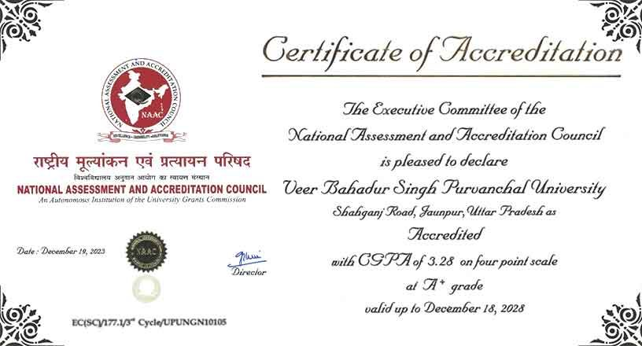
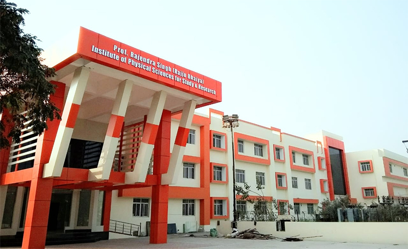
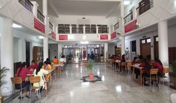
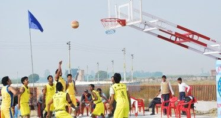
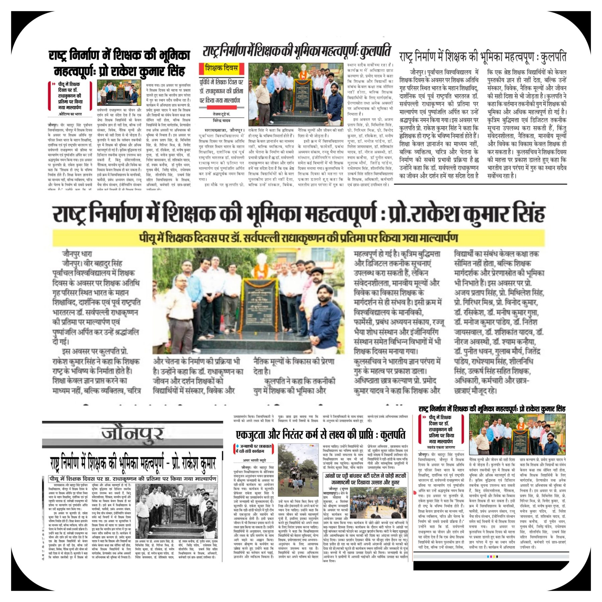
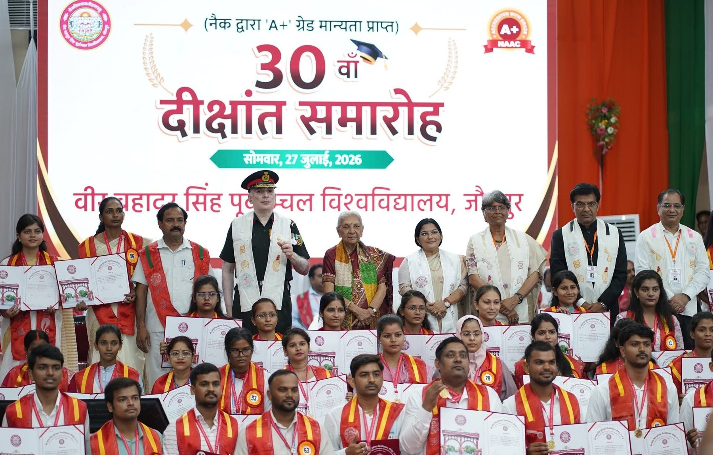
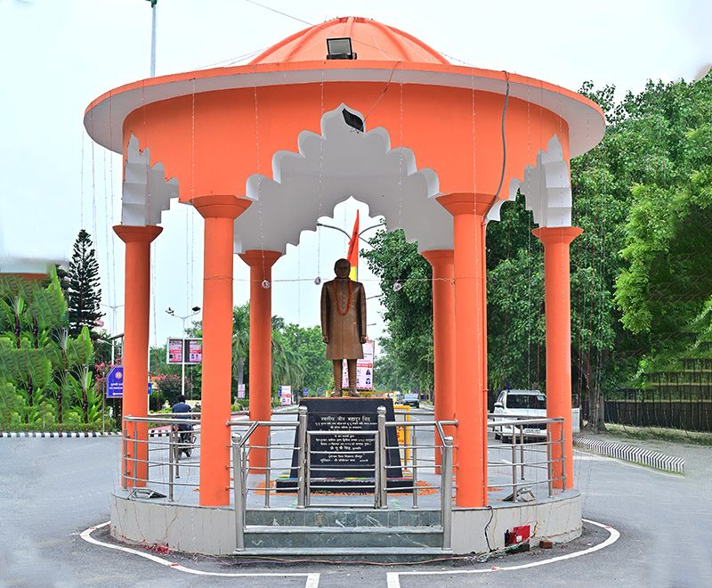
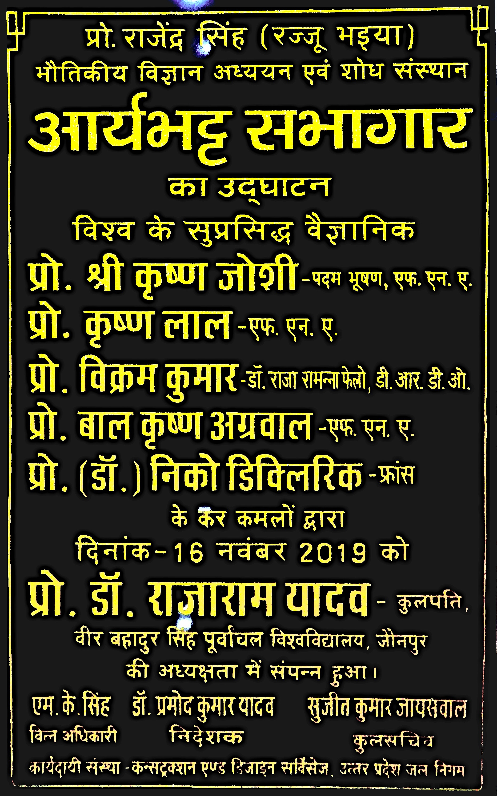

01प्रशासनिक भवन
Administrative Building & Main Gate
The welcoming threshold of the university — where new journeys begin, visitors are received and the campus first reveals its warm sandstone character.
Heritage architectureFiltering campus cards and stories as you type.
A Campus Blog & Virtual Showcase
वीर बहादुर सिंह पूर्वांचल विश्वविद्यालय
Where red-sandstone arches, quiet libraries and spirited student life come together. Explore the landmarks, stories and everyday magic of VBSPU Jaunpur.
Walk the campus
परिसर के स्थल · विश्वविद्यालय की पहचान
From the ceremonial main gate to the quiet stacks of the central library, every corner of VBSPU has a story worth slowing down for.

01प्रशासनिक भवन
The welcoming threshold of the university — where new journeys begin, visitors are received and the campus first reveals its warm sandstone character.
Heritage architecture
02शैक्षणिक भवन
Lecture halls, labs and departmental offices where courses in computing, sciences and the humanities turn curiosity into a career.
Learning & innovation
03केंद्रीय पुस्तकालय
A three-storey knowledge hub established in 1999 and renamed in 2004 — with Wi-Fi, digital resources and space for more than 150 readers.
Knowledge hub
04एकलव्य स्टेडियम
The heartbeat of campus sport — cricket finals, kabaddi tournaments and the daily practice that brings students together after class.
Sports & spirit
05छात्रावास एवं परिसर जीवन
Residential hostels, the transit lodge and the everyday friendships that turn a large campus into a close-knit community.
Student lifeThe campus journal
परिसर की कहानियाँ · विद्यार्थियों की आवाज़
Architecture, student life, events and heritage — written for anyone who wants to know VBSPU beyond a brochure.
A slow look at the main gate, its sandstone tones and the everyday rituals that unfold beneath it.
Inside the university's three-storey knowledge hub — from OPAC searches to the last table by the window.
Early morning practice, close finishes and the community that gathers at Eklavya Stadium.

The ceremony that marks years of effort — and the beginning of a new chapter for every graduate.

Academic blocks, research institutes and the quiet courtyards that connect one discipline to another.

The old city's monuments, markets and memories — and why a weekend there completes the VBSPU experience.
No stories match that search. Try another word or category.
Through the lens
परिसर की तस्वीरें · एक नज़र में
Landmarks, ceremonies, quiet corners and the people who fill them. Click any photograph to see it fullscreen.
No photos match that search. Try another word or category.